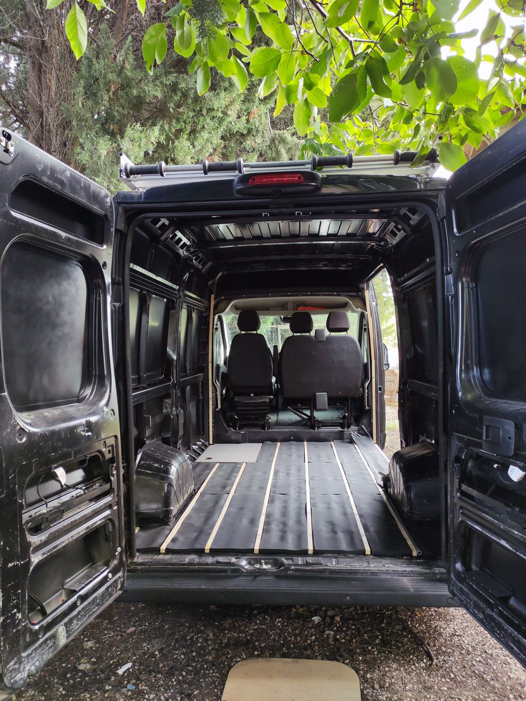
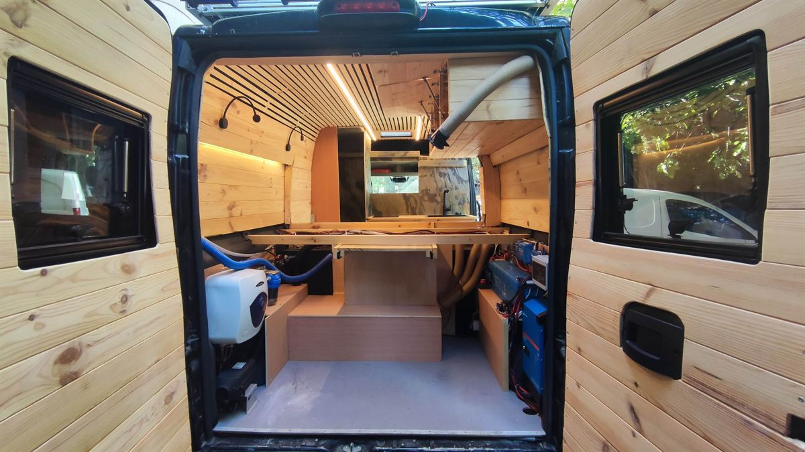
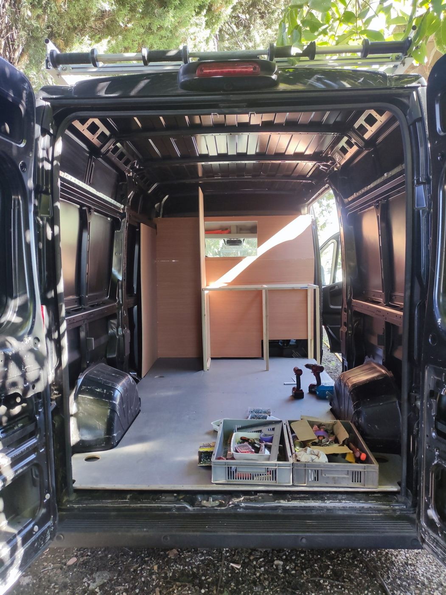
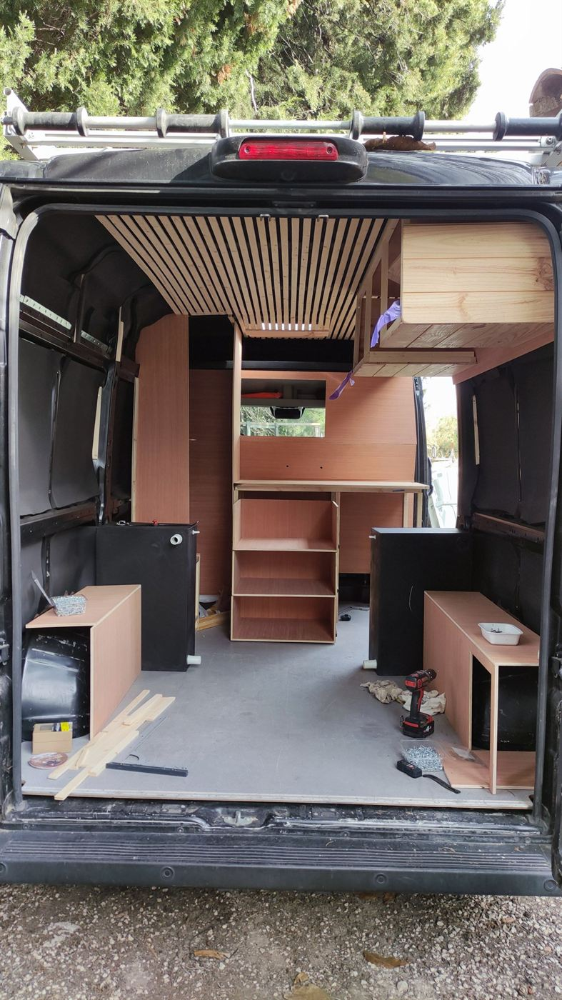
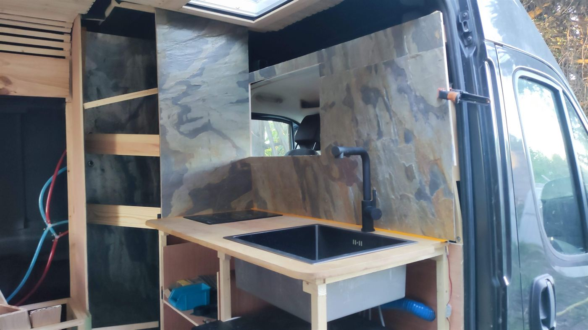
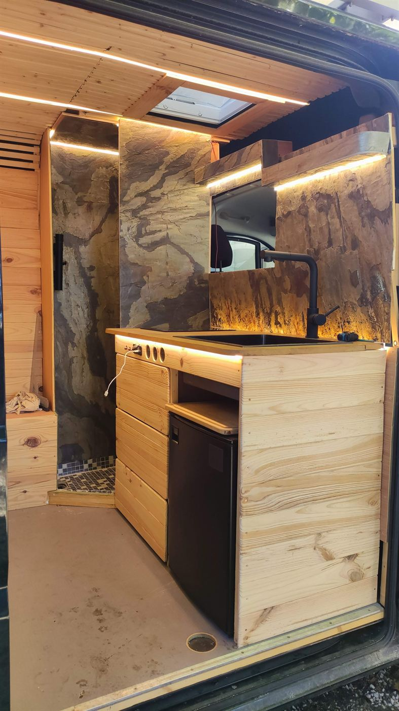
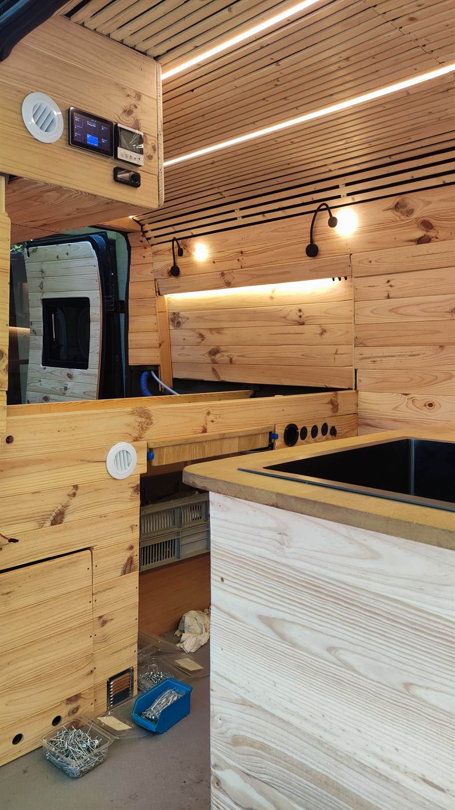

Peugeot Boxer noir
Un fourgon noir entièrement vide, transformé étape par étape en van aménagé : fenêtres, habillage en pin, électricité, cuisine et couchage. Le chantier touche à sa fin.
Fiche du projet
- Véhicule
- Peugeot Boxer
- Début du chantier
- Octobre 2025
- État
- Presque terminé (octobre 2026)
- Type de projet
- Aménagement complet


Étape par étape
Un an de travail, du fourgon nu au van presque prêt à partir.
-
Le fourgon vide
Octobre 2025Le point de départ : un utilitaire noir, vide, prêt à être transformé.
-

Structure et premiers meubles
Octobre 2025Pose des panneaux et des premières structures en bois.
-

Plafond et mobilier
Décembre 2025Plafond en lames de bois, colonnes de rangement et emplacement de la cuisine.
-

Électricité
Janvier 2026Mise en place de l'installation électrique Victron.
-

Cuisine et crédence
Avril 2026Pose de l'évier, du robinet et de la crédence de la cuisine.
-
Presque terminé
Octobre 2026Fenêtres, éclairage, cuisine : place aux dernières finitions.
Les finitions
-

Le meuble cuisine -

Plan de travail et rangements -

L'électricité Victron, complète, tout électrique
Un projet comme celui-ci ?
Aménagement complet ou une seule étape : parlons de votre fourgon.